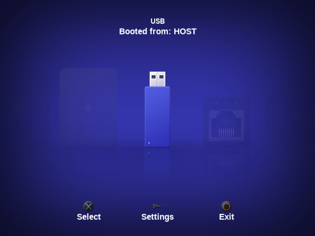
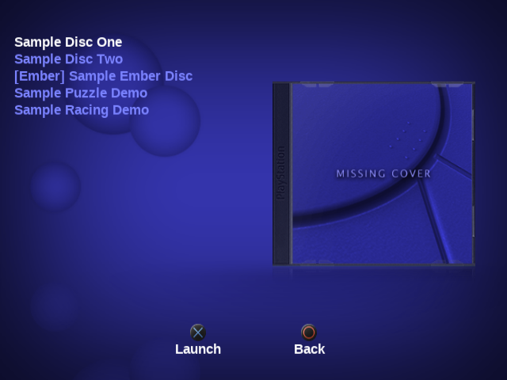
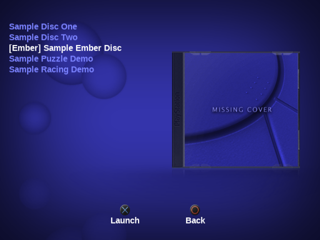
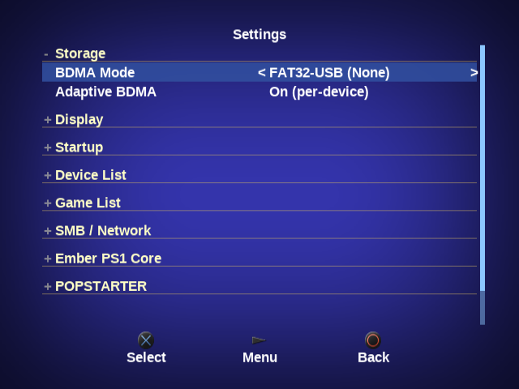
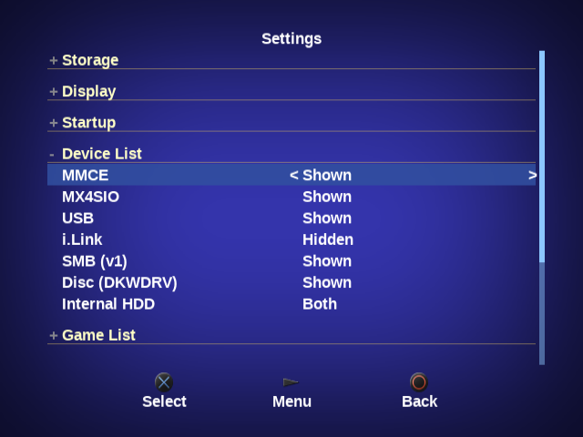
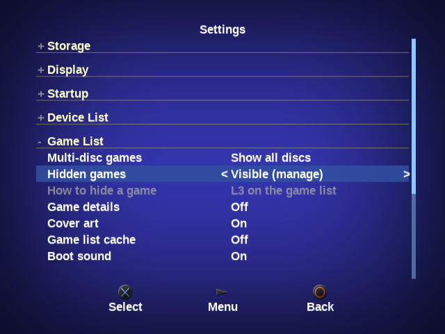
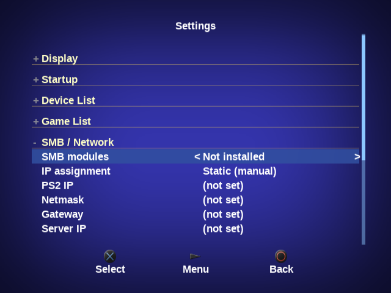
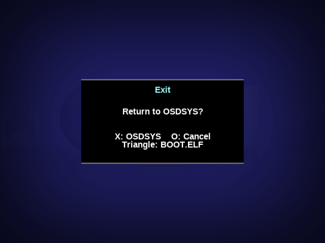

POPSLoader — the modern launcher
POPSLoader is a menu-driven front-end for POPStarter: a Lua UI on the Enceladus runtime that lists your PS1 games with cover art and launches them — while adding device backends stock POPStarter never had. It is the project this documentation site lives in, maintained by Ripto / NathanNeurotic.
POPSTARTER.ELF documented across the rest of this site — think of it as the friendly launcher layer on top. Everything in the POPStarter reference applies underneath.Screenshots








POPSLoader 1.4.2 captured in the RIPPCSX2 emulator at the native 640×480, with placeholder game files we made (no game data or cover art). They show the interface only: no game was launched and this is not a real-PS2 test. “Booted from: HOST” is the emulator's name for where it loaded the ELF. Capture details.
What it adds over stock POPStarter
- Cover-art game browser — a console-style menu of your PS1 library instead of renamed ELFs.
- Modern storage — pick your device with BDMA Mode: FAT32 or exFAT USB, MX4SIO, MMCE (SD2PSX / MemCard PRO2), plus the APA internal HDD.
- Boots from anywhere — memory card, MMCE, MX4SIO, or USB.
- In-launcher settings — video standard, BDM mode, boot page, per-device game lists, hidden games.
- Multi-disc collapse, launch arguments (boot straight to a device or game from your launcher), and HDD game-list caching.
mc0:/BOOT/BOOT.ELF (then mc1:/BOOT/BOOT.ELF as a fallback) — e.g. back to wLaunchELF, OPL, or your own boot menu — launched with reboot_iop=0 for a clean handoff. (Some third-party docs describe this as a “Triangle = relaunch BOOT.ELF” shortcut; in this fork Triangle opens the Exit menu and BOOT.ELF is one of its three choices.)APPS/PS1_POPSLOADER/, full POPS/ plus
EMBER/ ZIP, and flat eight-file PS1_POPSLOADER.psu
are available in the official 1.4.4 release
and the rolling prerelease. The
native GitHub Wiki
is synchronized from the same maintained guide.
Project wiki ·
Install guide ·
Ember guide ·
ZIP/PSU specification.
Hardware validation remains outstanding. i.Link is an experimental page (hidden by default) and has not been tested on hardware.Project documentation
The living docs for the POPSLoader codebase. Rendered straight from the repository.